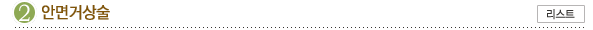
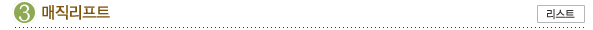
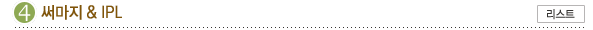
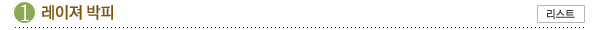

보톡스는 ‘보툴리눔 톡신’이라는 약물의 상표명입니다. 보톡스의 성분은 클로스트리디움
보툴리눔이
생산하는 독소로서 주름살을 만드는 근육의 운동에 필요한 신경물질인 아세틸콜린이라는
물질의 방출을
억제하여 해당 근육의 작용을 마비시켜 주름이 지지 않게 하는 원리를 이용한 것입니다.
보톡스는 안과분야에서 사용되다가 성형외과 영역에서 주름살제거주사로 이용되자 선풍적인
인기를
얻기 시작했습니다. 나이가 들면서 눈꺼풀이 쳐져 이마근육을 습관적으로 사용함으로써
생기는
이마부위의 주름과 양미간에 생기는 내천자(川) 주름, 눈꼬리에 생기는 잔주름 등은
보톡스 주사로
어느정도 펼 수 있습니다. 시술 전 후 특별한 준비사항이 없고 시술시간이 5-10분에
불과하고 부기나
멍이 없어 바로 일상생활에 복귀할 수 있고 화장도 가능합니다. 효과가 영구적이지 않으므로
유지기간동안 주름의 진행을 방지할 수 있습니다. 근육의 힘이 풀린 뒤 다시 주사하면
되므로
반복투여가 가능합니다. 피부근육에 직접주사하기 때문에 좋은 효과를 얻기 위해서는 정확한
근육의
위치를 파악하여 시술해야 하므로 전문의의 시술을 받으시는 것이 좋습니다.
수술가이드
수술시간 : 5~10분
실밥제거 : 없음
레스틸렌
레스틸렌은 천연 주입물질로 식물에서 추출한 히알루론산이 주성분입니다. 히알루론산은
사람의 몸에도
일정량이 포함되어 있는 다당질로 피부뿐만 아니라 안구의 수정체, 연골, 뼈, 관절액에
존재하는
물질입니다. 히알루론산은 피부에 있어서는 표피와 진피속의 세포간질로서 세포를 서로
결합시키는
작용을 합니다. 피부노화가 진행되어감에 따라 피부세포의 히알루론산 생성능력이 떨어져
그 양이
감소하게 됩니다. 따라서 피부에 주입된 히알루론산은 인체에 흡수되어 주입된 부피만큼
수분을
끌어들이고 최초의 부피를 지속적으로 유지시켜줍니다. 레스틸렌은 앞서 보톡스와 마찬가지로
시술이
간편하고 일상생활에 전혀 지장이 없으며, 입가주름, 미간, 이마주름에 효과적입니다.
개인의 차이는
있지만 대략 2년 정도 효과가 지속됩니다.

나이가 듦에 따라 얼굴의 피부에 탄력이 떨어져 주름이 전체적으로 심하게 잡힌 경우
나이가 몹시
들어보여 부분적인 주름성형이 힘든 경우에는 얼굴 전체의 주름살을 펴는 안면 거상술을 실시하는
것이
좋습니다. 수술은 눈에 띄지 않게 머리카락 안쪽으로 절개선을 넣고 주름에 관계되는 근육을
절제하고
끌여 당겨 주름을 펴게 하는 시술을 합니다. 안면거상술은 피부를 당기는 방향이나 정도를
알맞게
조절하여 코의 윤곽도 새롭게 하고 피부를 팽팽하게 하여 피부의 요철도 없앨 수 있는 방법입니다.
주름이 많은 부위 즉, 이마, 눈가, 뺨, 목 부위별로 시술이 가능합니다.
수술가이드
수술시간 : 1~3시간

매직리프트란 러시아의 슐라마니쯔 박사가 개발한 매직실을 이용한 리프팅 시술법입니다.
매직실은 폴리프로필렌 실에 특수한 깃털모양의 돌기를 만들어 준 것으로 레이져 컷팅에 의해
특수한
형태로 만들어집니다. 매직실을 쳐진 부위에 주입하면 실의 돌기가 연부조직에 걸리기 때문에
쳐진 피부를 근본적으로 당겨서 고정시켜 얼굴의 형태를 원상회복시켜주는 역할을 하게 됩니다.
눈썹이나 눈꼬리가 쳐진 경우, 코옆 팔자주름, 목주름, 입가의 볼이 쳐져 턱선이 늘어진
경우에 효과적입니다. 매직리프트수술은 시술시 신경손상이나 혈관손상이 올 수 있으므로 노련한
경험이 있는 전문의료진에게 시술을 받아야 합니다. 센텀에서는 안전하고 세심한 시술을 통해
안심하시고 시술을 받을 수 있습니다. 수술시 입원은 필요 없으며 흉터도 전혀 없으며 일상생활로의
복귀가 빠릅니다.
수술가이드
수술시간 : 10분
실밥제거 : 없음

써마지 리프트 (THERMAGE LIFT)자세한
내용보기
써마지는 RF(Radiofrequency) 에너지를 이용해 진피깊은 조직에까지
콜라겐의 수축과 재생성을 촉진 시키는 작용을 합니다.
써마지는 수술하지 않고 입주위 팔자주름, 이마 및 눈꺼풀 처짐현상과
여드름, 여드름 흉터, 목주름에 효과적입니다.
IPL Photofacial (광회소술)이란?자세한 내용보기
IPL(Intense Pulsed Light) system을 이용한 것으로써 빛을
얼굴
전체 부위에 쪼여서 모든 스킨 트러블을 개선시키는 시술법입니다.
또한 IPL Photofacial은 피부를 활성화하고 피부의 팽팽함을 유지
하는 데 필요한 콜라겐을 증가시킵니다.

저희 아이리스에서는 여러 최신기종의 레이져를 보유하고 있읍니다.
피부노화로 인한 잔주름이나 특히 다크써클 등 부분적이나 안면전체에 대하여 특수 레이져를
이용하여
시술을 하고 있읍니다. 시술후 간편하게 치료를 위해 인공피부제품을 도포함으로 통증을
줄이고
상처 치유도 빨리 할 수 있읍니다.